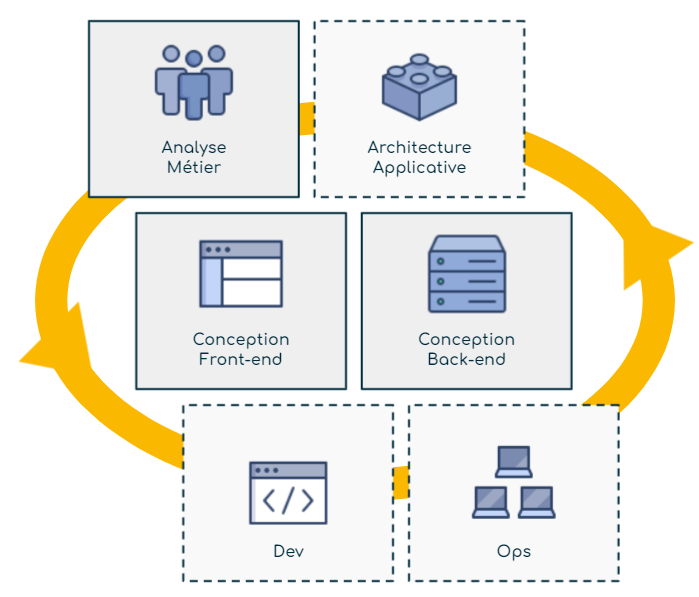

{% include block_heading.html
title="Analyse et Conception d’applications"
sub_title="Identifier les besoins des utilisateurs et concevoir la solution"
desc=""
%}

{% include block_heading.html
title="Un atelier partagé"
sub_title="Dans le processus de développement d’une application, Information System Designer s’adresse principalement aux analystes métier et aux concepteurs applicatifs (front-end et back-end). Elle leur permet de spécifier ensemble l’application à développer"
desc=""
%}
{% include block_cols.html
col="4"
icon_name="fas fa-users"
icon_color="txt_indigo"
title="Analyste métier"
desc="
{% include block_heading.html
title="Autres activités IT"
sub_title="L'approche visuelle de Information System Designer facilite la collaboration avec les autres activités impliquées dans le développement et la maintenance d'applications."
desc=""
%}
{% include block_cols.html
col="4"
icon_name="fas fa-cubes"
icon_color="txt_indigo"
title="Architecte applicatif"
desc="